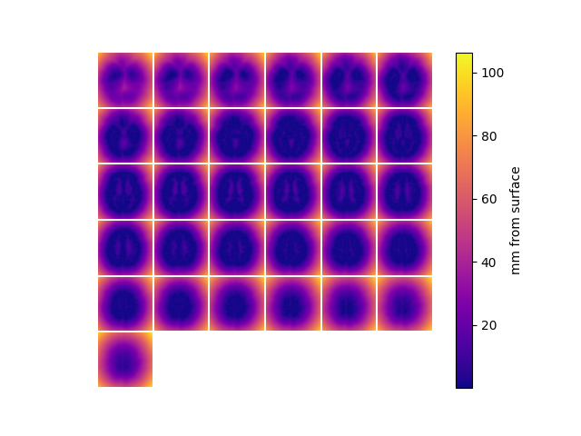

Note
Go to the end to download the full example code.
Voxel distance from surface¶
The utility function get_vox_dist returns the distance from each voxel in some space to the nearest vertex on the given surface. This function is used for generating ROI masks, cortical masks, etc.
<matplotlib.colorbar.Colorbar object at 0x7faee893c700>
import cortex
import matplotlib.pyplot as plt
# get distance to nearest point on the mid-cortical (fiducial) surface from each
# voxel in the functional space for subject 'S1' and the transform 'fullhead'
dist, argdist = cortex.get_vox_dist(subject='S1',
xfmname='fullhead',
surface='fiducial')
# dist contains the distance from each voxel to the nearest vertex
# dist.shape = (31, 100, 100) <-- the same size as the functional volume
# argdist contains the index of the nearest vertex to each voxel
# argdist.shape = (31, 100, 100) <-- the same size as the functional volume
# let's visualize the distance field using the mosaic function
cortex.mosaic(dist, cmap=plt.cm.plasma)
plt.colorbar(label='mm from surface')
Total running time of the script: (0 minutes 3.556 seconds)